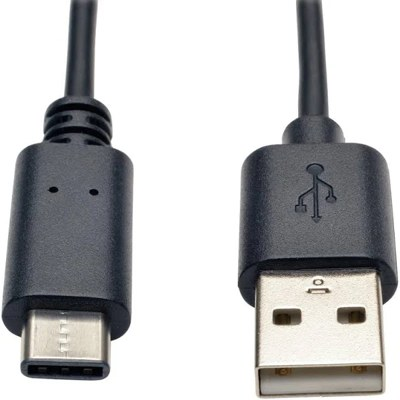
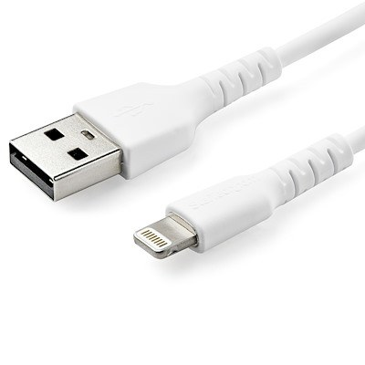

Cómo un navegador convierte archivos en un sitio web
Autoguardado listo
Haz Ahora: Repaso de diseño web
Piensa en los sitios web que construiste en las últimas clases. Responde con tus propias palabras.
Conoce el navegador
Arrastra cada etiqueta a un cuadro, o haz clic en una etiqueta y luego en su cuadro. Sigue la línea para ver exactamente qué parte identifica.
ozzynet · Home
←→↻https://ozzynet.example/home⋮
Welcome to ozzynet
A good place to learn about the web.
Home · Gallery · About
Navegador, sitio web y motor de búsqueda
Un navegador es el software que usas para visitar la web. Un sitio web contiene una o más páginas web relacionadas y sus archivos. Un motor de búsqueda te ayuda a encontrar páginas en la web. Un motor de búsqueda también puede abrirse desde un sitio web.
Usa el banco de palabras para completar las definiciones: encontrar · software · páginas web.
Un navegador web es que carga y muestra páginas web.
Un sitio web es una colección de relacionadas y archivos.
Un motor de búsqueda es un servicio que te ayuda a información en la web.
Un sitio web, páginas conectadas
El cuadro representa un sitio web. Cada círculo es una página web. Las líneas muestran enlaces entre páginas. Inicio enlaza con Acerca de, Galería y Contacto. Galería enlaza con sus páginas de fotos. Cada página tiene un enlace de regreso a su página principal.
SITIO WEB DEL CLUB DE PERROS BUENOS
Círculo morado = página actual. Haz clic en un círculo conectado o usa los enlaces de la página.
Good Dog Club
←↻
Actividad: Empieza en Inicio. Abre Galería, visita Foto 1, regresa a Galería, vuelve a Inicio y abre Contacto. Observa cómo cambia la dirección al moverte entre páginas web. Tu recorrido se guarda automáticamente.
Construye una página web
Un navegador. Una página web. Tres archivos. Haz clic en HTML, CSS o JS para cargar esa etapa y ver su código. Prueba el botón y anota qué cambió antes de pasar al siguiente archivo.
¿Alguna vez viste un sitio web con texto simple o imágenes que faltan? El navegador puede haber recibido el HTML mientras una hoja de estilos o una imagen no se cargó. Las imágenes también son recursos separados. Observa cómo cada archivo cambia la misma página.
Archivos del sitio web
Enciende el inspector y luego pasa el cursor o haz clic en algo de la vista previa para encontrar su código.
El Club de Perros Buenos
←→↻https://ozzynet.example/good-dog⋮
Vista previa del navegador · esperando HTML
Punto de control de HTML
Punto de control de CSS
Punto de control de JS
Estándares compartidos
Los sitios web que usas todos los días, incluidos TikTok, Instagram y YouTube, usan HTML, CSS y JavaScript en tu navegador. Los estándares compartidos ayudan a que distintos navegadores entiendan el mismo código.

A · USB-C

B · Lightning
Júntalo todo
Viste a tu navegador leer HTML real, aplicar reglas reales de CSS y ejecutar JavaScript real. El navegador convirtió esas instrucciones en la página que usaste.
Exporta tu trabajo
Revisa tus respuestas, escribe tu nombre y exporta tu documento de respuestas. Sube el archivo descargado donde te indique tu profesor.
Empezar una respuesta nueva
Esto borra las respuestas actuales de este navegador. Exporta primero si necesitas conservarlas.